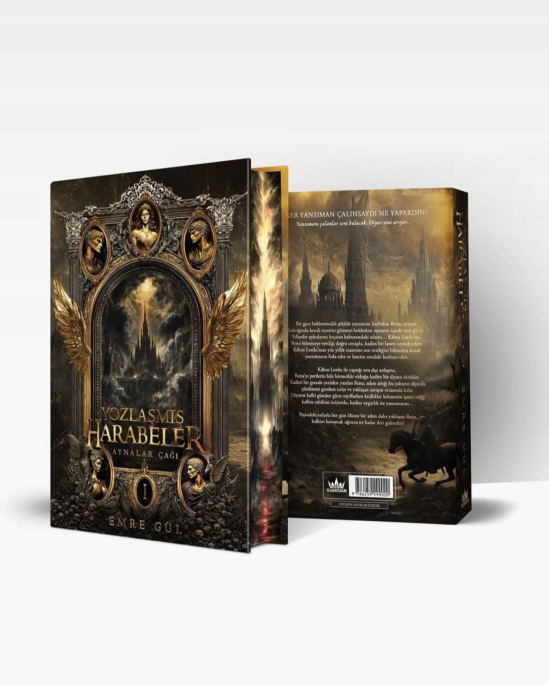

Eğer yansımam çalınsaydı ne yapardın?
Yansımanı çalanlar seni bulacak. Diyar seni arıyor…
Bir gece beklenmedik şekilde yansıması kaybolan Rena, aynaya baktığında kendi suretini görmeyi beklerken aynanın içinde onu görür. Yıllardır uykularını kaçıran kâbusundaki adamı… Kâbus Lordu’nu. Rena bilmeceye verdiği doğru cevapla, kadim bir laneti uyandırırken Kâbus Lordu’nun yüz yıllık esaretine son verdiğini bilmeden kendi yansımasını feda eder ve lanetin sıradaki kurbanı olur.
Kâbus Lordu ile yaptığı sıra dışı anlaşma, Rena’yı perilerin bile hizmetkâr olduğu kadim bir diyara sürükler. Kaderi bir gecede yeniden yazılan Rena, adım attığı bu yabancı diyarda çözülmesi gereken sırlar ve yaklaşan savaşın ortasında kalır. Diyarın kalbi günden güne zayıflarken krallıklar kehanetin işaret ettiği kalbin sahibini istiyordu, kadim uygarlık ise yansımasını… Peşindeki sırlarla her gün ölüme bir adım daha yaklaşan Rena, kalbini korumak uğruna ne kadar ileri gidecekti?
Uyarı: Yetişkin okurlar içindir.